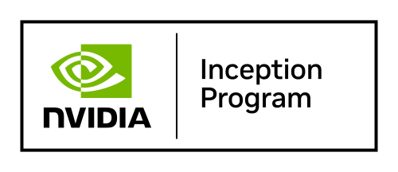

Whole-Person Context
Outputs are designed to connect findings with symptoms, lifestyle, medications, goals, and the clinical story around the patient.
AIStill is building the osteopathic approach to AI: practical intelligence systems that turn complex clinical and education data into clear, reviewable outputs while keeping context, relationship, and licensed professional judgment at the center.
AIStill treats osteopathic identity as a design constraint: AI should augment the physician-patient relationship, not flatten care into isolated data points.
Outputs are designed to connect findings with symptoms, lifestyle, medications, goals, and the clinical story around the patient.
Reports and teaching tools are written to support better conversations between patients, clinicians, learners, and care teams.
Consequential outputs are built for review, correction, and override by appropriately credentialed humans with responsibility for decisions.
AIStill emphasizes limits, uncertainty, source context, and plain-language explanations so outputs can be challenged instead of passively accepted.
Claims should match the evidence, with stronger validation and monitoring as workflows move closer to clinical action.
The standard is broader than OMM alone: it includes contextual medicine, lifestyle medicine, communication, education, and whole-person care.
This framing aligns with the emerging OsteopathicAI definition work: AI should augment, not replace, osteopathic professional judgment and whole-person care.
Each product is a layer in a larger osteopathic care and learning loop, moving from context to interpretation to supervised action.
Capture labs, symptoms, medications, lifestyle, goals, and clinical context before interpretation begins.
Turn dense health data into pattern-aware summaries that separate findings, uncertainty, and next questions.
Prepare patient and provider talking points for shared decision-making and relationship-centered follow-up.
Support supervised planning without unsupported diagnosis, medication changes, product claims, or dosage advice.
Use de-identified insights for education, quality improvement, research, and better osteopathic training workflows.
Three connected pillars: interpret clinical data in context, support osteopathic medical education, and prepare AI workflows for responsible use.
We turn dense reports, notes, and structured results into plain-language summaries that preserve patient context.
Outcome: a patient-facing report with findings, whole-person context, and provider talking points.
We help training programs organize curriculum, learner performance, clinical reasoning, and teaching material into usable insight.
Outcome: clearer feedback loops for educators, learners, and program leadership.
We design tools that keep clinicians in the loop, make outputs easy to audit, and avoid unsupported medical claims.
Outcome: AI-assisted workflows that are easier to validate before clinical use.
The Hub and the Lab are separate on purpose: one proves the clinical interpretation layer, the other supports research, education, and partner workflow development.
Interprets SpectraCell Micronutrient Test results in the context of the person: symptoms, medications, goals, lifestyle, and provider review.
A broader workspace for evidence mapping, structured intake experiments, whole-person nutrition education, and future partner resources.
AIStill is built from osteopathic clinical practice, medical education, and an emphasis on responsible AI implementation.

AIStill is a member of the NVIDIA Inception program. This supports the company's work on AI systems that can scale responsibly as clinical and education use cases mature.
Patrick Barry, D.O. is a double board-certified osteopathic physician and Associate Professor focused on applying artificial intelligence to clinical and medical education workflows.
Dr. Barry's clinical background spans patient care, teaching, and the practical realities of translating complex information into decisions people can act on. His work with AIStill grew from a simple need: clinicians and educators do not need more noise, they need clearer systems for interpreting the data already in front of them.
AIStill is built around that principle: AI should support judgment, improve communication, and keep licensed professionals at the center of clinical decision-making.
For product questions, osteopathic partner pilots, clinical education workflows, or implementation briefings, contact AIStill directly.